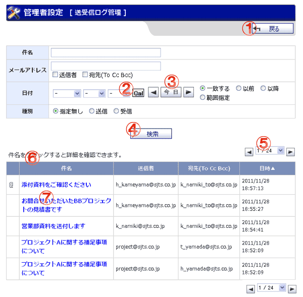

WEBメールの送受信ログ管理画面です。

機能説明
戻るボタン遷移元の画面へ遷移します。 |
カレンダーボタンポップアップでカレンダー画面が開きます。 |
|---|---|
前日・今日・翌日移動ボタン現在表示している日付から、表示を切り替えます。 |
検索ボタン入力・指定された検索条件で検索を行い結果を表示します。 |
ページングコンボ・前頁・次頁ページングコンボで任意のページへ、前頁アイコンクリックで前のページへ、次頁アイコンクリックで次のページへそれぞれ遷移します。 |
ヘッダタイトルクリックによって一覧のソート条件の切り替えを行います。 |
件名クリックするとメールの詳細情報がポップアップで表示されます。 |
表示・入力項目説明
件名
件名を入力します(100文字以内)。
メールアドレス
アドレスの区分を選択し、メールアドレスを入力します(256文字以内)。
日時
日時を設定します。
種別
種別を設定します。